Několik fotek z mých procházek:
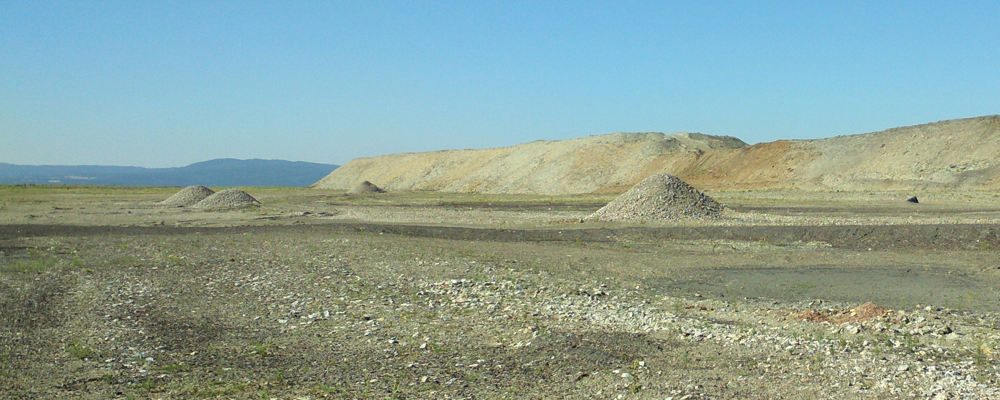
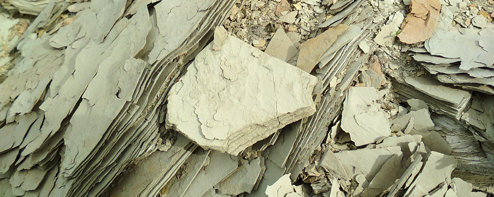
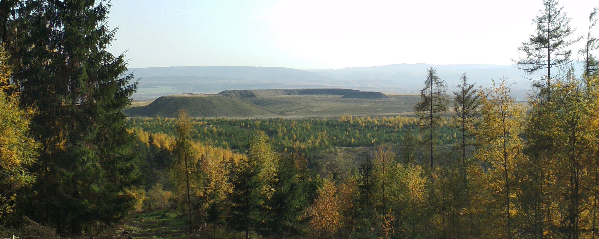
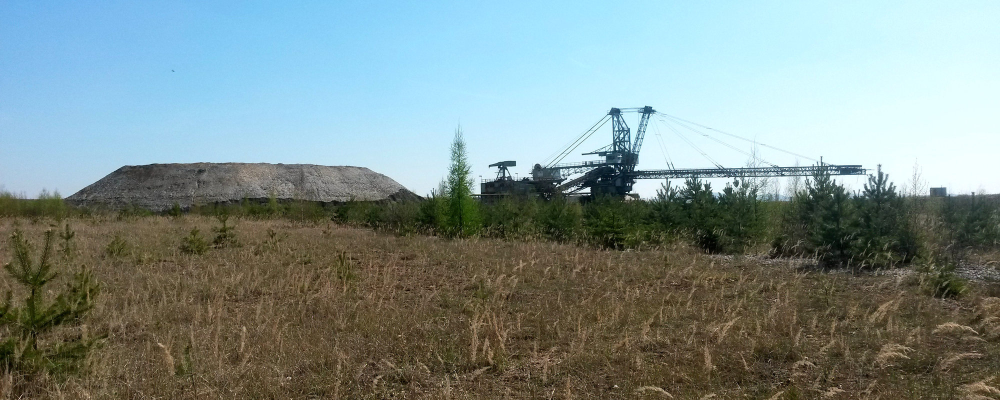

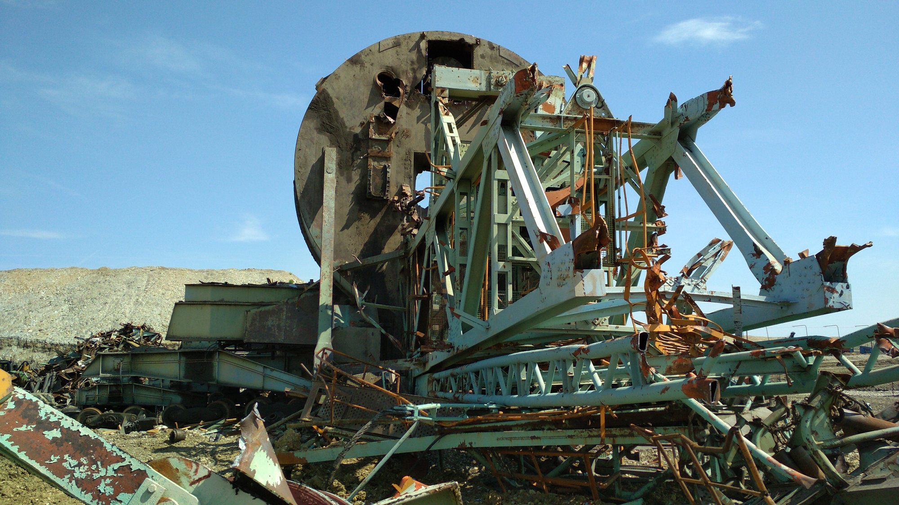
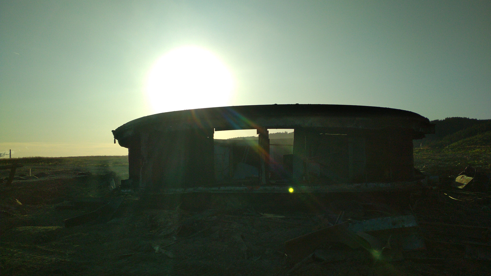
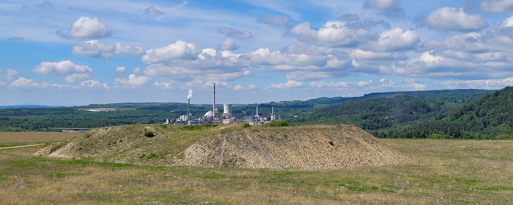
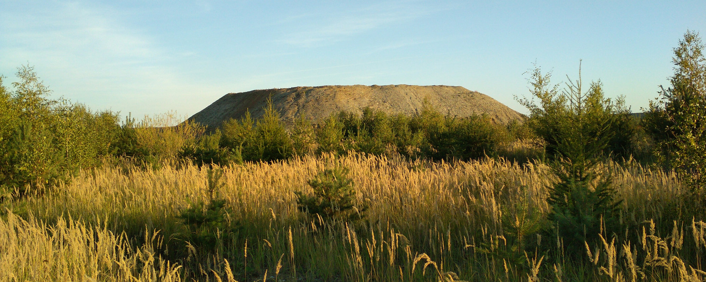
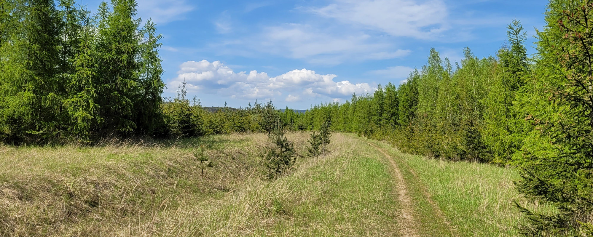
GCBT8M2 Smolnická výsypka
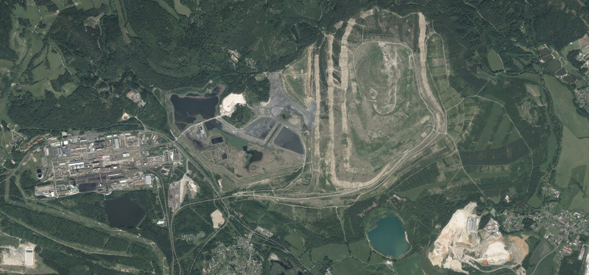
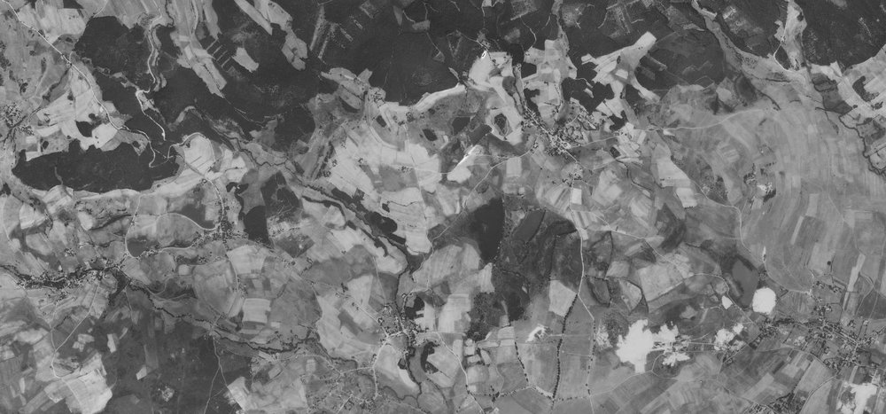
Použité zdroje ortofotomap:
ČÚZK, Creative Commons CC BY 4.0
VGHMÚř Dobruška, Creative Commons CC BY 4.0
Několik fotek z mých procházek:








